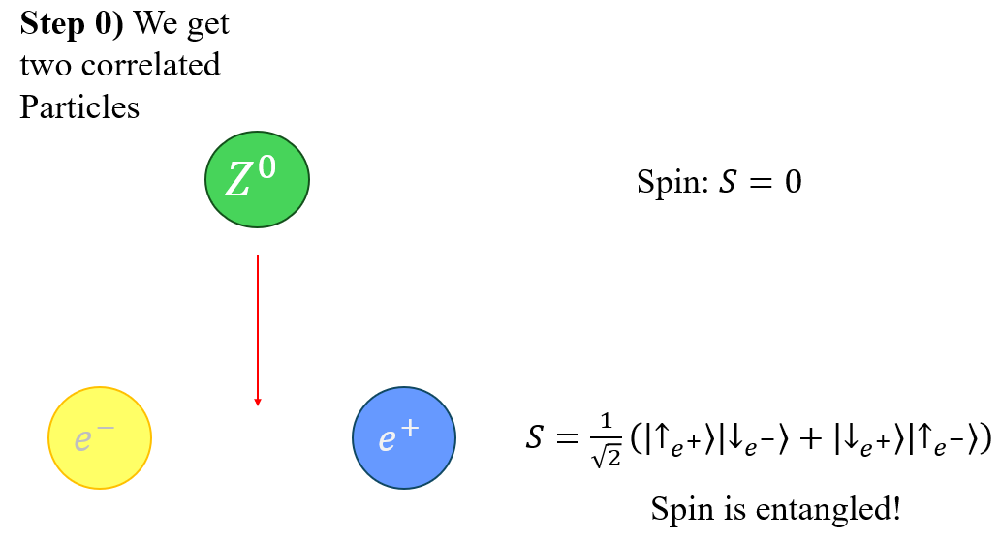
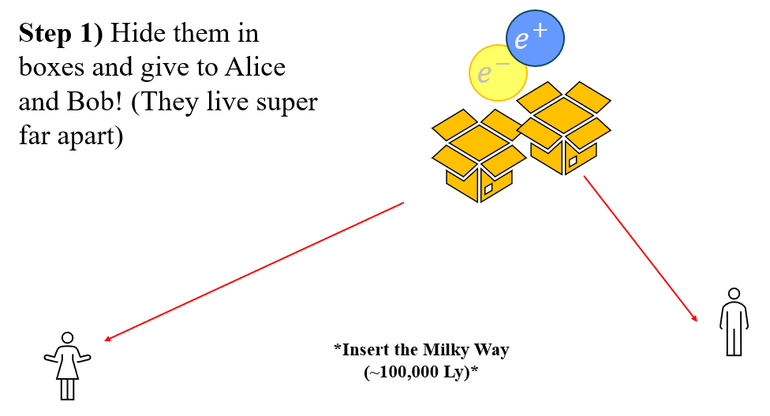
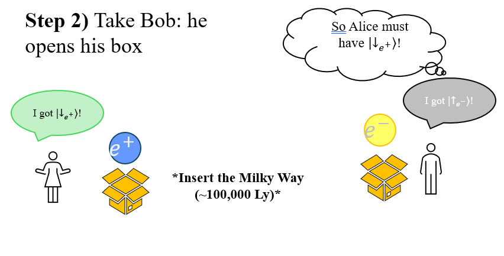

What is Quantum Entanglment?
Entanglement is by far one of the most "overhyped" concept in all of quantum physics.
The following analogy helps to illustrate the notion of entanglement: [1]

First consider the "0th" step, it is merely to ensure the experiment holds. Here we take a Spin 0 particle at rest and let it decay: all you have to know is that spin is conserved, so either particle splits exactly in half- up and down.

We then package these new particles, and send them to our friends Alice and Bob, who unfortunatley live a great distance apart

Now say thousands of years pass (this detail is not relevant), and Bob's space mail lands on Earth. He writes to let us know about the package, and upon opening discovers his particle is spin up. Alice's space mail also arrives, and she says hers is spin down
But, Bob then scarily remarks that he then knew that Alice must have had spin down. But this means that information would have travelled faster than light!
So what is going on?
Bob knows "instantaenously" about Alice's particle spin, not because there is a secret phone-line tethering the two [1], but because of logical deduction- he would be able to know right off the bat that his spin is equal and opposite to Alice's.
Any mathematical depicition of entagnlement, just refers to this logical relationship
Key nuances of entanglement
- Measurement is random- one cannot just "pre-coordinate" them in such a way as to form a coherent message
- Once a measurement is made, entanglement is "broken" [2]
- Requires very isolated and specific conditions
References
- [1] Tong, D. (n.d.). 5. Quantum Foundations. [online] pp.141–146. Available at: https://www.damtp.cam.ac.uk/user/tong/aqm/topics5.pdf
- [2] Zurek, W.H. (2003). Decoherence, einselection, and the quantum origins of the classical. Reviews of Modern Physics, 75(3), pp.717; 765-766. doi:https://doi.org/10.1103/revmodphys.75.715.